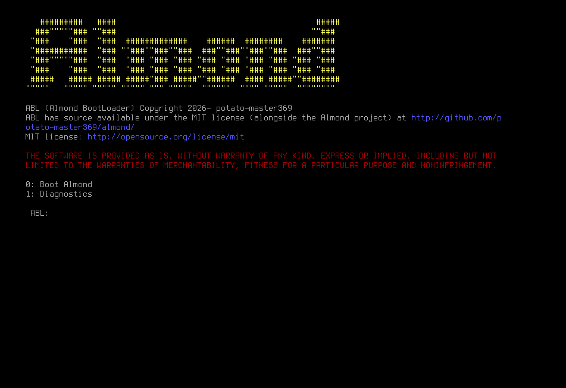

Navigation |
About Almond Almond is the cumulation of hard work by our developers. Alas, we present an operating system, that brings some fresh thought into the well-trodden world of software. Almond, is not just another UNIX clone. We have enough of those. Instead, Almond aims to bring an experience, that makes your computer, truly compute. The computerThe personal computer, has been around for a long, long time, since the days of the IBM PC, and even before. It is quite frankly a staple in many of our lives. As such, we present the quintessential question - What does it really mean to compute? That's where Almond comes in. Almond provides a whole new world of thoughts. Thoughts about how an OS should abstract hardware, how software should be written, and how you should interact with the one thing you think about the least but need the most. Motto: Where to, on this fine day?Computing, being the centre of our product, presents a new question. Not just "How can you best use your computer?" but "How can you best use your computer for your own tasks?". We aren't all software developers, all designers, or all gamers. A perfect operating system caters to all of those. Choice is vastly important in our software. Don't need it? Don't use it. And, it's always a fine day with Almond! A pleasant operating system to use, and a pleasant group (or single person) of developers, here to work with you, not against you! Meet the team
Copyright (C) the Almond Developers/potato-master369. MIT license. |